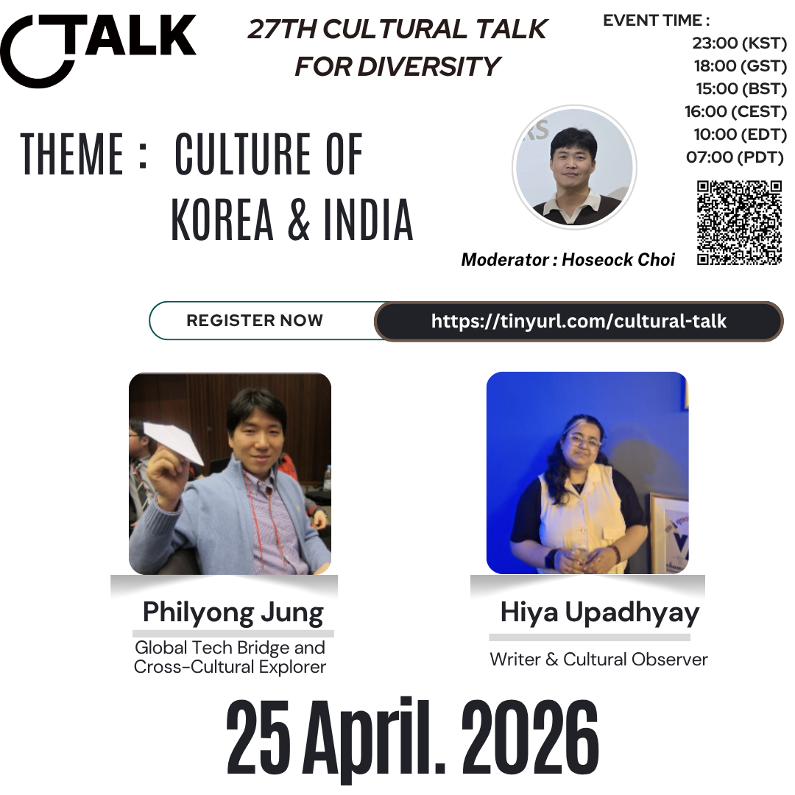

27th Cultural Talk: Culture of Korea & India
Korea and India each carry deep cultural traditions that continue to shape the world

Korea and India each carry deep cultural traditions that continue to shape the world in visible and quiet ways. From everyday habits and family life to language, creativity, and social values, these cultures offer perspectives that feel both rooted and globally resonant.
Join Hoseock Choi, along with Hiya Upadhyay and Philyong Jung, for a conversation that opens space for wider reflection, fresh stories, and diverse ways of seeing the world. We hope you’ll come ready to listen, share, and enjoy a lively exchange of ideas.